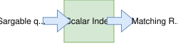
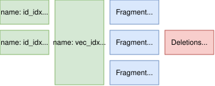
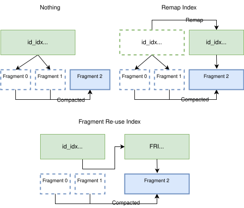

Indices in Lance¶
Lance treats indices as independent, redundant data structures layered on top of table row identifiers. This keeps the file format free of built-in search structures and lets index formats evolve independently from the table layout.
Lance supports three main categories of indices to accelerate data access: scalar indices, vector indices, and system indices.
Scalar indices accelerate queries on scalar data types such as integers, timestamps, and strings. This includes primary skipping structures such as zone maps as well as secondary structures such as B-trees, bitmap indices, and full-text search indices. They typically accept predicates such as equality, range, set-membership, or token matches and return matching row identifiers.

Vector indices are specialized for approximate nearest neighbor search on high-dimensional embeddings. Examples include IVF-based layouts and HNSW graphs. Instead of scalar predicates, vector indices receive a query vector and return row identifiers plus distance scores.
System indices are auxiliary structures that support internal table maintenance and row-identifier resolution. They are not queried directly by end users. Examples include the Fragment Reuse Index, which supports efficient remapping after compaction.
Design¶
Lance indices are designed with the following design choices in mind:
- Indices are loaded on demand: A dataset can be loaded and read without loading any indices. Indices are only loaded when a query can benefit from them. This design minimizes memory usage and speeds up dataset opening time.
- Indices can be loaded progressively: indices are designed so that only the necessary parts are loaded into memory during query execution. For example, when querying a B-tree index, it loads a small page table to figure out which pages of the index to load for the given query, and then only loads those pages to perform the indexed search. This amortizes the cost of cold index queries, since each query only needs to load a small portion of the index.
- Indices can be coalesced to larger units than fragments. Indices are much smaller than data files, so it is efficient to coalesce index segments to cover multiple fragments. This reduces the number of index files that need to be opened during query execution and then number of unique index data structures that need to be queried.
- Index files are immutable once written, similar to data files. They can be modified only by creating new files. This means they can be safely cached in memory or on disk without worrying about consistency issues.
Basic Concepts¶
An index in Lance is defined over a specific column (or multiple columns) of a dataset. It is identified by its name.
An index is made up of multiple index segments, identified by their unique UUIDs. Each segment is an independent, self-contained index covering a subset of the data.
Each index segment covers a disjoint subset of fragments in the dataset. The segments must cover
all rows in the fragments they cover, with one exception: if a fragment has delete markers at the time
of index creation, the index segment is allowed to not contain the deleted rows. The fragments an index
covers are those recorded in the fragment_bitmap field.
Index segments together do not need to cover all fragments. This means an index isn't required to be fully up-to-date. When this happens, engines can split their queries into indexed and unindexed subplans and merge the results.

Consider the example dataset in the figure above:
- The dataset contains three fragments with ids 0, 1, 2. Fragment 1 has 10 deleted rows, indicated by the deletion file.
- There is an index called "id_idx", which has two segments: one covering fragments 0 and another covering fragment 1. Fragment 2 is not covered by the index. Queries using this index will need to query both segments and then scan fragment 2 directly. Additionally, when querying the segment covering fragment 1, the engine will need to filter out the 10 deleted rows.
- There is another index called "vec_idx", which has a single segment covering all three fragments. Because it covers all fragments, queries using this index do not need to scan any fragments directly. They do, however, need to filter out the 10 deleted rows from fragment 1.
Index Storage¶
The content of each index is stored at the _indices/{UUID} directory under the base path.
We call this location the index directory.
The actual content stored in the index directory depends on the index type. These can be
arbitrary files defined by the index implementation. However, often they are made up of
Lance files containing the index data structures. This allows reuse of the existing Lance
file format code for reading and writing index data.
Creating and Updating Index Segments¶
Index segments are created and updated through a transactional process:
-
Build the index data: Read the relevant column data from the fragments to be indexed and construct the index data structures. Write these to files in a new
_indices/{UUID}directory, where{UUID}is a newly generated unique identifier. -
Prepare the metadata: Create an
IndexMetadatamessage with: uuid: The newly generated UUIDname: The index name (must match existing segments if adding to an existing index)fields: The columns the index depends on: the keyed column(s) it is searched on, followed by any merely-carried columns named incovering_fields.fields[0]is always a keyed column.covering_fields: The trailing subset offieldswhose values the index carries but is not keyed on, letting a query that only projects those columns be answered without a fragment take. Empty for an index that carries no extra columns. Declaring a column here does not by itself make it servable -- see Serving carried columns.fragment_bitmap: The set of fragment IDs covered by this segmentindex_details: Index-specific configuration and parametersversion: The format version of this index type-
See the full protobuf definition in table.proto.
-
Commit the transaction: Write a new manifest that includes the new index segment in its
IndexSection. This is done atomically using the same transaction mechanism as data writes.
When updating a column in place (without deleting the row), the engine must remove the
affected fragment IDs from the fragment_bitmap field of any index segment whose fields
include that column — whether the index is keyed on it or merely carries it. This marks
those fragments as needing re-indexing without invalidating the entire segment and prevents
invalid data from being read from the index.
Index Compatibility¶
Before using an index segment, engines must verify they support it:
-
Check the index type: The
index_detailsfield contains a protobufAnymessage whose type URL identifies the index type (e.g., B-tree, IVF, HNSW). If the engine does not recognize the type, it should skip this index segment. -
Check the version: The
versionfield inIndexMetadataindicates the format version of the index segment. If the engine does not support this version, it should skip this index segment. This allows index formats to evolve over time while maintaining backwards compatibility.
When an engine cannot use an index segment, it should fall back to scanning the fragments that would have been covered by that segment.
Serving carried columns¶
IndexMetadata.covering_fields records the columns an index segment declares it
carries. It does not establish that the segment's storage holds their values.
The segment's storage schema is authoritative. Before answering a query from a carried column, an engine must confirm that column is present in the storage it opened, and fall back to a take against the base table when it is not. A segment whose declaration names a column its storage does not hold is a legal state, not corruption: a maintenance operation that cannot carry the payload through a rebuild is permitted to withdraw it and leave the declaration standing.
Current state
No index builder writes carried values yet, so today every declaration is ahead of
its storage. Engines that read covering_fields must therefore treat it purely as a
declaration and serve every column from the base table until they have verified the
storage themselves. This is transitional; the rule above is not.
Loading an index¶
When loading an index:
- Get the offset to the index section from the
index_sectionfield in the manifest. - Read the index section from the manifest file. This is a protobuf message of type
IndexSection, which contains a list ofIndexMetadatamessages, each describing an index segment. - Read the index files from the
_indices/{UUID}directory under the dataset directory, where{UUID}is the UUID of the index segment.
Optimizing manifest loading
When the manifest file is small, you can read and cache the index section eagerly. This avoids an extra file read when loading indices.
The IndexMetadata message contains important information about the index segment:
uuid: the unique identifier of the index segment.fields: the columns the index depends on: the keyed column(s) the index is searched on, followed by any columns it merely carries, as named incovering_fields.fields[0]is always a keyed column.covering_fields: the trailing subset offieldswhose values the index carries alongside its own data but is not keyed on. Empty for an index that carries no extra columns. This declaration is not authoritative for what the segment can serve -- see Serving carried columns.fragment_bitmap: the set of fragment IDs covered by this index segment.index_details: a protobufAnymessage that contains index-specific details, such as index type, parameters, and storage format. This allows different index types to store their own metadata.
Full protobuf definitions
There are both part of the `table.proto` file in the Lance source code.message IndexSection {
repeated IndexMetadata indices = 1;
}
message IndexMetadata {
// Unique ID of an index. It is unique across all the dataset versions.
UUID uuid = 1;
/* The columns to build the index. These refer to file.Field.id.
*
* fields[0] is always a column the index is keyed on. Trailing entries may
* instead be merely carried, not keyed on -- see `covering_fields` below.
*/
repeated int32 fields = 2;
// Index name. Must be unique within one dataset version.
string name = 3;
// The version of the dataset this index was built from.
uint64 dataset_version = 4;
/* A bitmap of the included fragment ids.
*
* This may by used to determine how much of the dataset is covered by the
* index. This information can be retrieved from the dataset by looking at
* the dataset at `dataset_version`. However, since the old version may be
* deleted while the index is still in use, this information is also stored
* in the index.
*
* The bitmap is stored as a 32-bit Roaring bitmap.
*/
bytes fragment_bitmap = 5;
/* Details, specific to the index type, which are needed to load / interpret the index
*
* Indices should avoid putting large amounts of information in this field, as it will
* bloat the manifest.
*
* Indexes are plugins, and so the format of the details message is flexible and not fully
* defined by the table format. However, there are some conventions that should be followed:
*
* - When Lance APIs refer to indexes they will use the type URL of the index details as the
* identifier for the index type. If a user provides a simple string identifier like
* "btree" then it will be converted to "/lance.table.BTreeIndexDetails"
* - Type URLs comparisons are case-insensitive. Thereform an index must have a unique type
* URL ignoring case.
*/
google.protobuf.Any index_details = 6;
// The minimum lance version that this index is compatible with.
optional int32 index_version = 7;
/* Timestamp when the index was created (UTC timestamp in milliseconds since epoch)
*
* This field is optional for backward compatibility. For existing indices created before
* this field was added, this will be None/null.
*/
optional uint64 created_at = 8;
/* The base path index of the data file. Used when the file is imported or referred from another dataset.
* Lance use it as key of the base_paths field in Manifest to determine the actual base path of the data file.
*/
optional uint32 base_id = 9;
/* List of files and their sizes for this index segment.
* This enables skipping HEAD calls when opening indices and allows reporting
* of index sizes without extra IO.
* If this is empty, the index files sizes are unknown.
*/
repeated IndexFile files = 10;
/* The subset of `fields` whose values this index co-locates alongside its own
* data, so a query projecting only those columns can be answered from the
* index without a take against the base table.
*
* Must be a suffix of `fields`: the columns the index is keyed on come first,
* the columns it merely carries come last, and at least one keyed column
* always remains. Empty for an index that carries no extra columns, which is
* every index written before this field existed.
*
* Carried columns are listed in `fields` as well. That is deliberate: every
* consumer that reads `fields` as the index's dependency set -- staleness,
* commit conflict detection, schema evolution guards -- then covers them with
* no change and no way to forget one.
*
* This declaration is not authoritative for what the segment can actually
* serve. The segment's own storage schema is: a reader must confirm the
* storage carries a column before answering a query from it, and fall back to
* a take against the base table otherwise. A declaration naming columns the
* storage does not hold is a legal state, not corruption -- a maintenance
* operation that cannot carry the values through a rebuild is permitted to
* withdraw the payload while leaving this declaration in place.
*/
repeated int32 covering_fields = 11;
}
Handling deleted and invalidated rows¶
Since index segments are immutable, they may contain references to rows that have been deleted or updated. These should be filtered out during query execution.

There are four situations to consider:
- A fragment has some deleted rows. A few of the rows in the fragment have been marked as deleted, but some of the rows are still present. The row addresses from the deletion file should be used to filter out results from the index.
- A fragment has been completely deleted. This can be detected by checking if a fragment ID present in the fragment bitmap is missing from the dataset. Any row addresses from this fragment should be filtered out.
- A fragment has had one of the index's columns updated in place. This cannot be detected
just by examining metadata. To prevent reading invalid data, the engine should filter out any
row addresses that are not in the index's current
fragment_bitmap. The column need not be one the index is keyed on: every column infieldscounts, including the merely-carried ones named incovering_fields. A carried column can be updated while the keyed column is untouched, and a segment left covering that fragment would answer from an obsolete carried value. - A fragment has an updated value in an overlay file.
This can be detected by checking if any of the fragments in the index's
fragment_bitmaphave overlay files. For each overlay whosecommitted_versionis greater than the index segment'sdataset_version, the overlay carries updated values not reflected in the index, so its covered rows must be excluded from index results. Excluded rows are re-evaluated against their current (overlaid) values on the flat path — dropping them without re-evaluation would silently lose rows that match under the new value. Exclusion is field-aware: only overlays covering a column in the index'sfieldsmatter — keyed or merely carried. Restricting this to the keyed column would leave a fragment covered after an overlay updated a carried one, and the index would then serve a stale carried value. You may exclude just the affected rows or the whole fragment; the latter is simpler and safer but re-evaluates more rows than necessary. See Data Overlay Files for the exclusion set, re-evaluation, and correctness invariant.
Compaction and remapping¶
When fragments are compacted, the row addresses of the rows in the fragments change. This means that any index segments referencing those fragments will no longer point to existing row addresses. There are three ways to handle this:

-
Do nothing and let the index segment not cover those fragments anymore. This approach is simple and valid, but it means compaction can immediately make an index out-of-date. This is the worst options for query performance.
-
Immediately rewrite the index segments with the row addresses remapped. This approach ensures the index is kept up-to-date, but it incurs significant write amplification during compaction.
-
Create a Fragment Reuse Index that maps old row addresses to new row addresses. This allows readers to remap the row addresses in memory upon reading the index segments. This approach adds some IO and computation overhead during query execution, but avoids write amplification during compaction.
Stable Row ID for Index¶
Indices can optionally use stable row IDs instead of row addresses. A stable row ID is a logical identifier that remains constant even when rows are moved during compaction.
Benefits:
- No remapping needed after compaction
- Updates only invalidate the index if data in one of its
fieldschanges — the keyed column(s) or any column named incovering_fields
Tradeoffs:
- Requires an additional lookup to translate stable row IDs to physical row addresses at query time
This feature is currently experimental. Performance evaluation is ongoing to determine when the tradeoff is worthwhile.